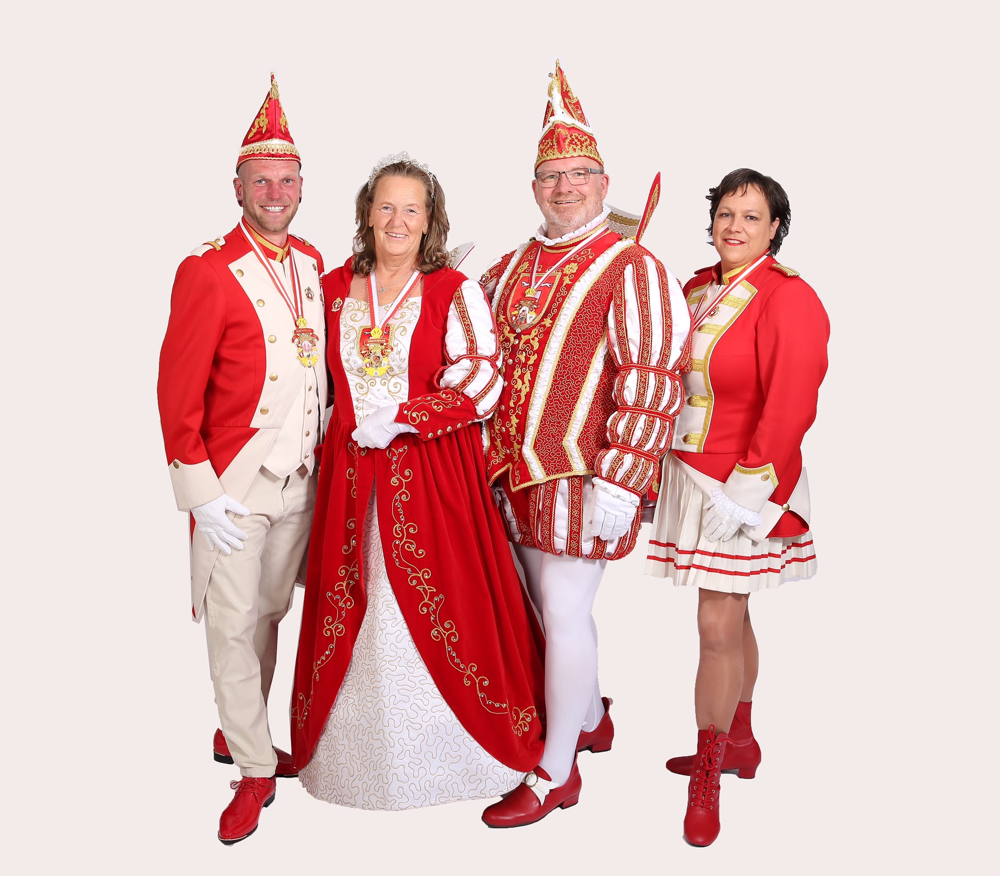
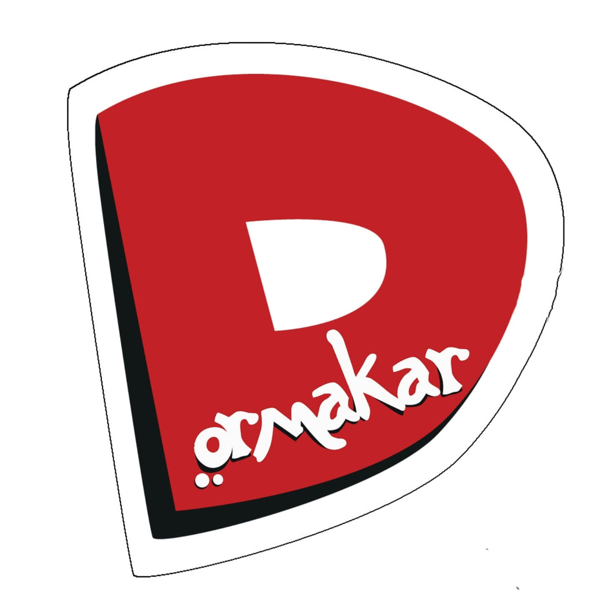
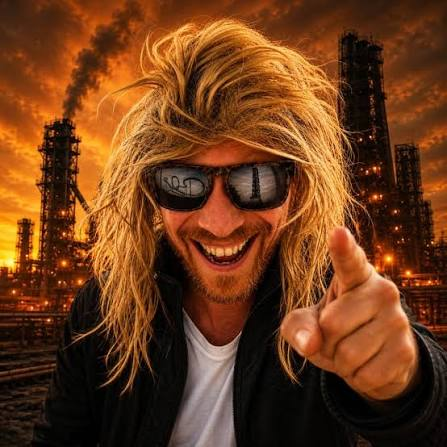
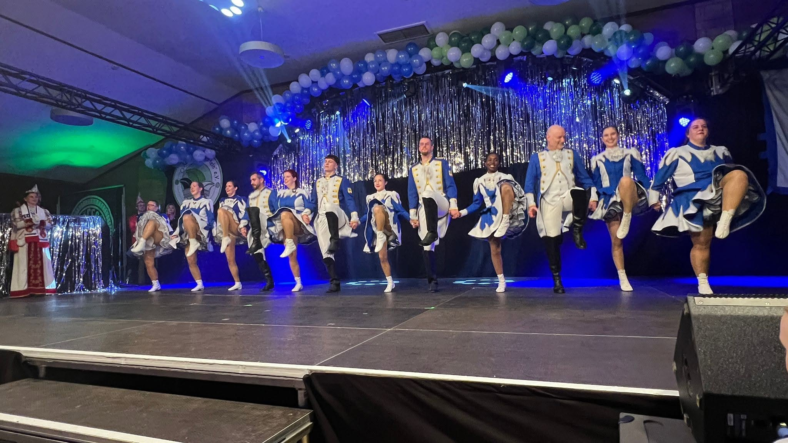
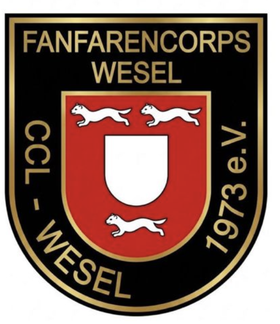
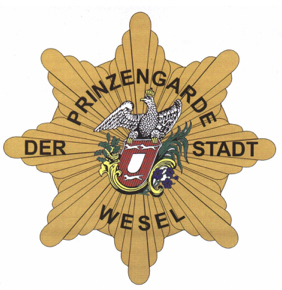
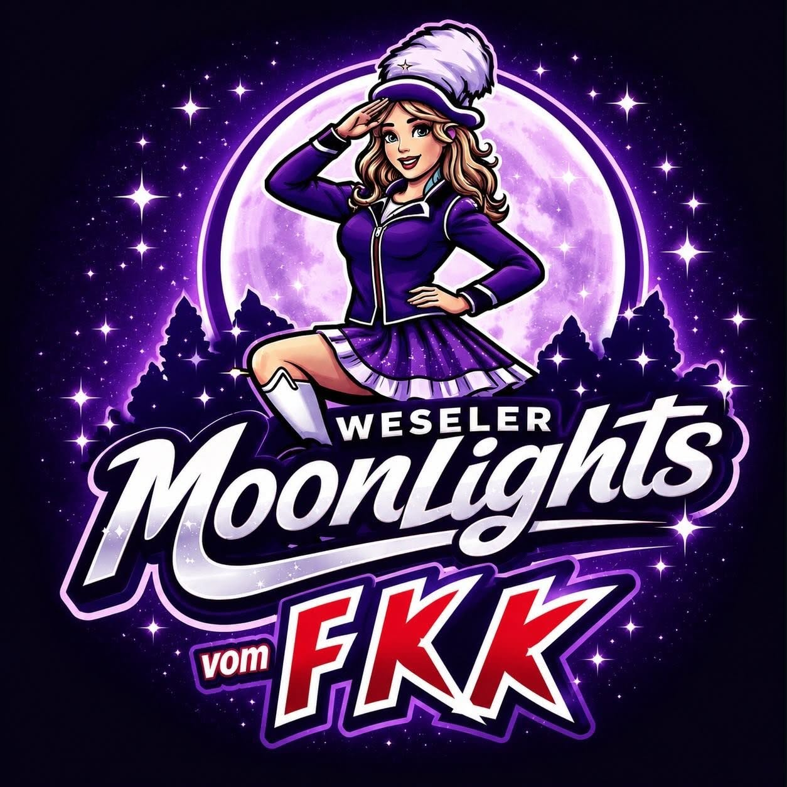
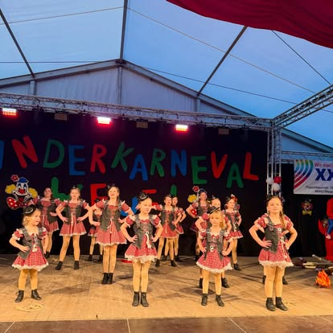
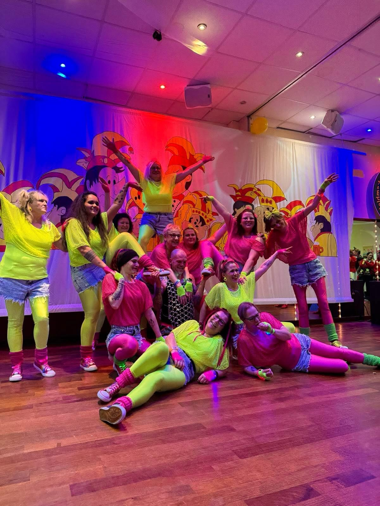
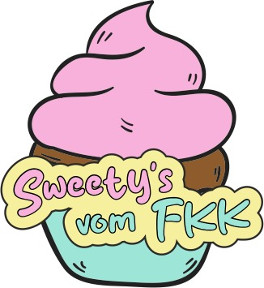

Jörg II. & Anke I.
Das Weseler Prinzenpaar mit Page Oli und Pagin Eva – gemeinsam unter dem Motto „Karneval verbindet“.
Ein Abend, der unserer Geschichte alle Ehre macht: Dörmakar live, große karnevalistische Gäste, Tänze voller Energie und echte Feldmarker Leidenschaft.

Live-Highlight des AbendsSeit 77 Jahren steht das Feldmarker Karnevals-Komitee für gelebtes Brauchtum, Gemeinschaft, Freundschaft und die Freude am gemeinsamen Feiern. Generationen von Jecken haben den Verein geprägt – mit Herzblut, Ideen und unzähligen Erinnerungen. Dieses Jubiläum feiern wir nicht leise. Wir feiern es so, wie es sich für den FKK gehört: bunt, herzlich und mit einem Programm, das das Tanzhaus zum Beben bringt.
Wenn Dörmakar loslegt, bleibt niemand still. Freut euch auf kölsche Töne, mitreißende Livemusik und einen Auftritt, der unser Jubiläum zu einem unvergesslichen Abend macht.
Natürlich feiern auch die Repräsentanten des Weseler Karnevals gemeinsam mit uns das 77-jährige Jubiläum.

Das Weseler Prinzenpaar mit Page Oli und Pagin Eva – gemeinsam unter dem Motto „Karneval verbindet“.
Auch Elia I. besucht uns gemeinsam mit ihrem Gefolge.
Foto folgtVon Musik und Gardetanz bis zur energiegeladenen Show: Dieser Abend vereint Gäste aus der Region mit den eigenen FKK-Gruppen.

Ruhrpott-Humor und Stimmung mit Kultfaktor.

Gardetanz, Präzision und pure Bühnenenergie.

Karnevalsmusik aus Wesel.

Tradition und Gardegeist.

Unsere Jugendgarde bringt den Saal zum Leuchten.

Unser Nachwuchs – klein, jeck und ganz groß auf der Bühne.


Showtanz, Farbe und beste Stimmung aus den eigenen Reihen.
Beim Onlinekauf kommen die von Eventfrog vor Abschluss ausgewiesenen Servicekosten hinzu.
Sicher bestellen, online bezahlen und das QR-Ticket direkt per E-Mail erhalten.
Zum vollständigen TicketshopDie Platzwahl ist frei. Kommt rechtzeitig, bringt gute Laune mit und erlebt mit uns einen Abend, über den Wesel noch lange sprechen wird.
Feldmarker Karnevals-Komitee e.V. – seit 1950 für Wesel